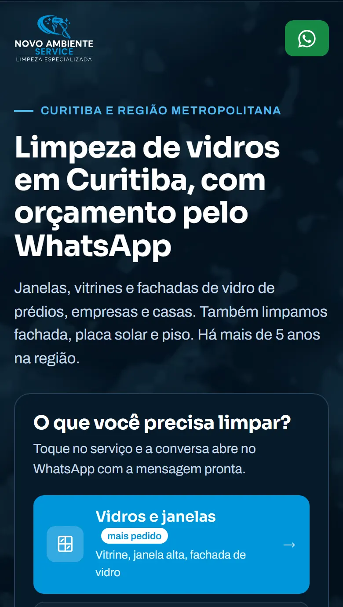

Opção 1
Orçamento em um toque
Pra quem chega do Google já querendo preço.
- Como funciona
- Logo no topo, a pessoa escolhe o serviço: vidros, fachada, placa solar ou piso. O WhatsApp abre com a mensagem pronta, já dizendo o que ela precisa.
- Por que funciona
- Quem busca "limpeza de vidros em Curitiba" já decidiu contratar alguém. Quanto menos passos até o WhatsApp, mais orçamento chega. E como cada mensagem vem com o serviço, vocês ficam sabendo qual serviço traz mais contato.
- O que depende de vocês
- Nada além do que já temos.